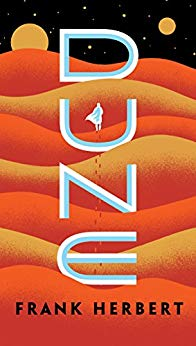

Best Selling Books
The Top Three Best Sellers Currently
These three books are the hottest tickets at the moment, from a childrens book to a book of self-discovery written by a former First Lady of the United States. These stories, one and all, have taken the world by storm, and make a worthy read at any time of the day, any time of the year.
Best Selling Science Fiction Books


These books introduce to use a world full of technology and intrigue beyond this world, and in their genre reign supreme. These tales weave intricate patterns of death and life, of advancement in technology that could only ever be thought of in the vivid imagination of an artful mind. Prepare to be submerged in a one of a kind experience!
Best Selling Philosophy Books
Life is fraught with follies and risks that we are unprepared for, but these three books have been rated as three of the best books in preparing each of us for the lives ahead of us. These books confront what is truly real, and question our meaning of being here, exposing truths about humanity in the process. Read these for a glimpse into the inner workings of humanity itself.
View our Other Books, Best Sellers and Staff Picks, Through these Links: